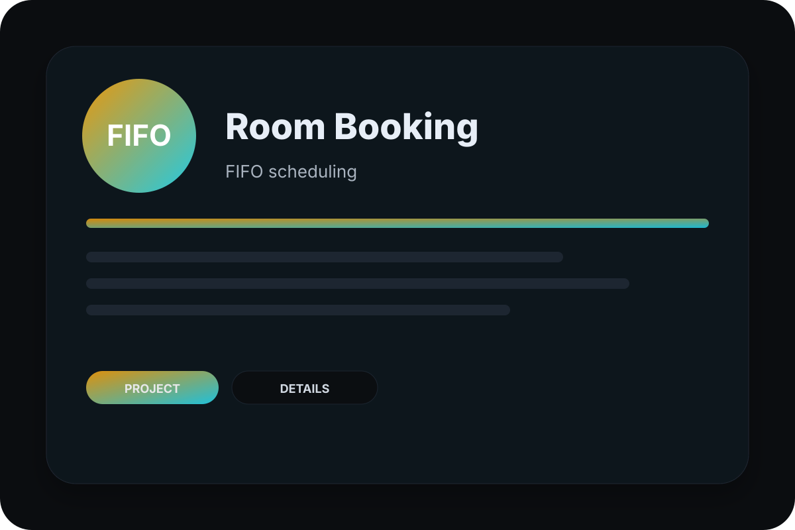

Studi Kasus · Aplikasi Web
Peminjaman Ruangan (FIFO)
Peminjaman ruangan yang dicatat di buku atau grup chat hampir selalu berujung bentrok jadwal. Sistem ini memindahkan seluruh proses ke satu tempat dengan aturan antrian FIFO yang jelas: siapa mengajukan lebih dulu, dialah yang mendapat slot.

Masalah yang diselesaikan
Di kampus dan kantor, satu ruangan sering diminta beberapa pihak pada jam yang sama. Tanpa aturan yang tegas dan catatan waktu pengajuan, keputusan terasa tidak adil dan sering memicu perselisihan antar unit.
Antrian FIFO sebagai aturan yang transparan
Setiap pengajuan tercatat lengkap dengan waktu masuk. Ketika dua permintaan bertabrakan pada slot yang sama, sistem mendahulukan yang lebih awal dan menandai sisanya sebagai antrian. Aturan ini terlihat oleh semua pemohon, sehingga keputusan tidak lagi bergantung pada kedekatan personal.
Hasil untuk pengguna
Pemohon melihat ketersediaan ruangan sebelum mengajukan, admin menyetujui atau menolak dari satu halaman, dan seluruh jadwal tampil dalam kalender bersama. Arsitekturnya sudah disiapkan untuk pengiriman notifikasi melalui email maupun WhatsApp.
Fitur utama yang dibangun
- Antrian booking berbasis FIFO untuk mencegah bentrok.
- Alur persetujuan admin dan tampilan jadwal.
- Siap integrasi notifikasi (email/WA).
Pertanyaan seputar proyek ini
Bagaimana jika dua orang mengajukan ruangan pada jam yang sama?
Apakah sistem ini cocok untuk kantor, bukan hanya kampus?
Proyek lain yang mungkin relevan

Promosi Wisata (PAM Clustering)
Dashboard promosi wisata menggunakan clustering PAM untuk segmentasi dan targeting pengunjung.

POS K-Means
Sistem POS dengan analisis clustering K-Means untuk insight penjualan/kelompok pelanggan.

Events (K-Means)
Platform event dengan clustering K-Means untuk klasifikasi peserta dan rekomendasi lebih tepat.